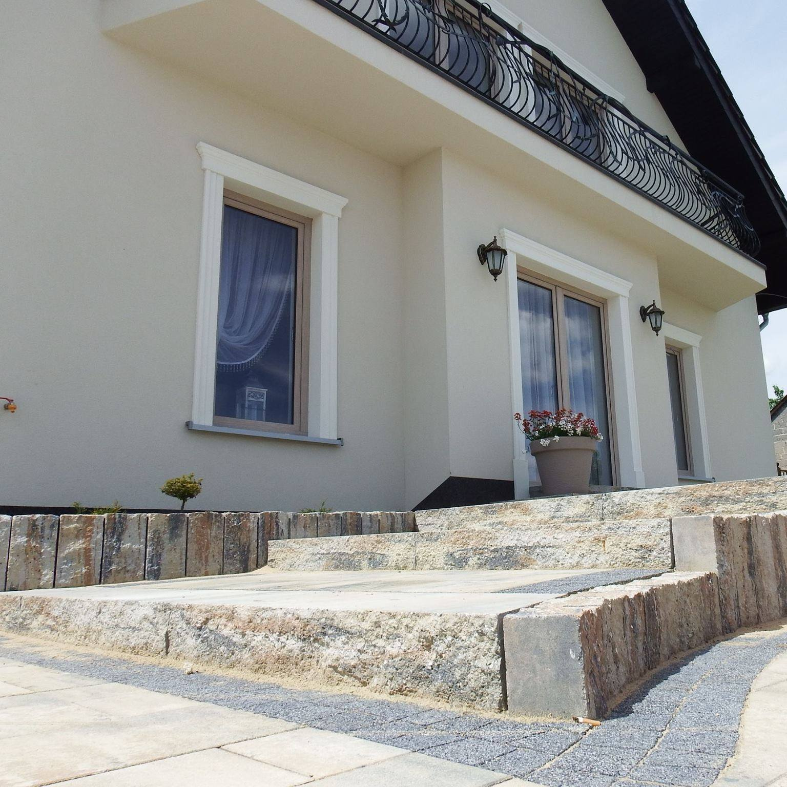

O nas
Serdecznie zapraszamy Państwa na codzienne obiady, uroczyste kolacje i niezliczone jubileuszowe fety. Oprócz codziennej karty menu organizujemy kameralne przyjęcia, bankiety oraz wszelkiego rodzaju imprezy okolicznościowe. Podchodzimy do każdego przyjęcia indywidualnie, przywiązujemy ogromną wagę do poznania potrzeb i oczekiwań naszych klientów. Wszystkie dania przyrządzamy ze świeżych, naturalnych składników od sprawdzonych, regionalnych dostawców. W okresie letnim dysponujemy przestronnym tarasem. Do państwa dyspozycji są dwie sale w całości klimatyzowane, dodatkowym atutem jest parking.
Gotowanie to coś więcej, niż tylko praca - to pasja
Kontakt
Zapraszamy do kontaktu!
telefon: +48 502 309 680